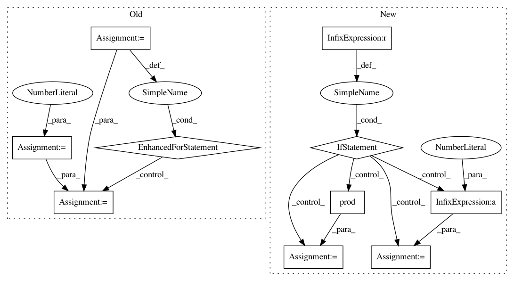

d835c2656618fe0d227c7eb15eecb4847e8b6475,lazyflow/operators/obsolete/classifierOperators.py,OpPredictRandomForest,execute,#OpPredictRandomForest#Any#Any#Any#,211
Before Change
res = self.inputs["Image"][newKey].allocate().wait()
shape=res.shape
prod = 1
for i,e in enumerate(shape):
if i < len(shape) - 1:
prod *= e
features=res.reshape(prod, shape[-1])
prediction=RF.predictProbabilities(features.astype(numpy.float32))
After Change
traceLogger.debug("OpPredictRandomForest: Requesting classifier. roi={}".format(roi))
RF=self.inputs["Classifier"].value
if RF is None:
// Training operator may return "None" if there was no data to train with
result[...] = numpy.zeros(numpy.subtract(roi.stop, roi.start), dtype=numpy.uint8)[...]
return
traceLogger.debug("OpPredictRandomForest: Got classifier")
//assert RF.labelCount() == nlabels, "ERROR: OpPredictRandomForest, labelCount differs from true labelCount! %r vs. %r" % (RF.labelCount(), nlabels)
newKey = key[:-1]
newKey += (slice(0,self.inputs["Image"].shape[-1],None),)
res = self.inputs["Image"][newKey].allocate().wait()
shape=res.shape
prod = numpy.prod(shape[:-1])
features=res.reshape(prod, shape[-1])
prediction=RF.predictProbabilities(features.astype(numpy.float32))
prediction = prediction.reshape(*(shape[:-1] + (RF.labelCount(),)))
// If our LabelsCount is higher than the number of labels in the training set,
// then our results aren"t really valid.
// Duplicate the last label"s predictions
chanslice = slice(min(key[-1].start, RF.labelCount()-1), min(key[-1].stop, RF.labelCount()))
result[...]=prediction[...,chanslice]*255 // FIXME: This assumes that channel is the last axis
In pattern: SUPERPATTERN
Frequency: 3
Non-data size: 10
Instances
Project Name: ilastik/ilastik
Commit Name: d835c2656618fe0d227c7eb15eecb4847e8b6475
Time: 2012-07-02
Author: bergs@janelia.hhmi.org
File Name: lazyflow/operators/obsolete/classifierOperators.py
Class Name: OpPredictRandomForest
Method Name: execute
Project Name: scipy/scipy
Commit Name: b0f34cdfd3ec8e41521cfd1b4a19c8dabb51fbbf
Time: 2020-02-15
Author: pvanmulbregt@users.noreply.github.com
File Name: scipy/stats/_ksstats.py
Class Name:
Method Name: _kolmogn
Project Name: scipy/scipy
Commit Name: b0f34cdfd3ec8e41521cfd1b4a19c8dabb51fbbf
Time: 2020-02-15
Author: pvanmulbregt@users.noreply.github.com
File Name: scipy/stats/_ksstats.py
Class Name:
Method Name: _kolmogn_p